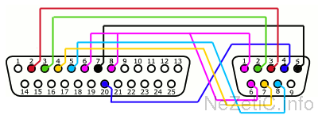
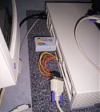

Il arrive parfois que certaines machines, comme quelques stations SUN par exemple, n’aient pas des connecteurs séries au format DB9 mâle, mais au format DB25.
Ceci pose problème, car les câbles DB9/DB25 ne sont pas forcement évident à trouver à bon prix.
Il existe sur le net quelques articles expliquant comment réaliser soit même un câble de ce type (voir par exemple le très bon article de Sunwizard), mais ne serait-il pas plus judicieux de réaliser un simple adaptateur permettant d’utiliser un bon vieux câble série standard (en DB9 donc) que beaucoup d’entre vous possèdent déjà.
C’est ici ce que je propose de réaliser très simplement.
Réalisation
Pour réaliser votre adaptateur, vous n’aurez besoin que de 2 connecteurs, respectivement au format DB9 et DB25. On les trouve très facilement dans n’importe quel magasin d‘électronique, ou on peut les commander par correspondance pour un prix dérisoire.
Viendront s’ajouter un fer à souder, et du fil électrique (voir des fils, de différentes couleurs, ce sera plus facile).
Sur le schéma présenté ici, ce sont les faces extérieures des connecteurs que vous voyez. La numérotation correspond à cette vue externe : côté soudure, elle est inversée.

img_right
DB 25
DB 9
2
3
3
2
4
7
5
8
6 et 8
1 et 6
7
5
20
4
Une fois soudé, vérifiez bien qu’il n’y ait pas d’erreurs de câblage, ni d’extrémités de fils en contacts alors que ceux-ci ne devraient pas être reliés. Il est conseillé de s’aider d’un multimètre, même maison, une pile de 4,5 V et une petite ampoule suffisant à tester les connexions.
Attention : ne dénudez pas vos fils pour les souder sur une trop grande longueur, cela pourrait faciliter les cours circuits à l’usage.

Example(ci contre) : Connexion série entre une SparStation 1 et un Armada M300 sous FreeBSD.
On peut bien sûr finir le montage en l’intégrant dans un petit boîtier, ce qui évite de trop manipuler les fils de liaisons au risque de les dessouder.

{kind=link}